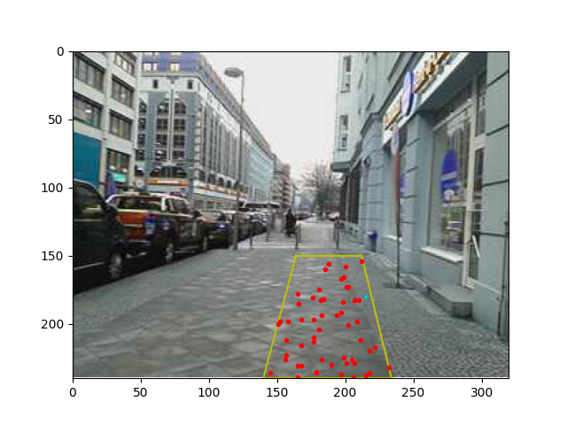
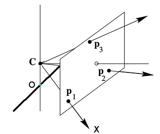
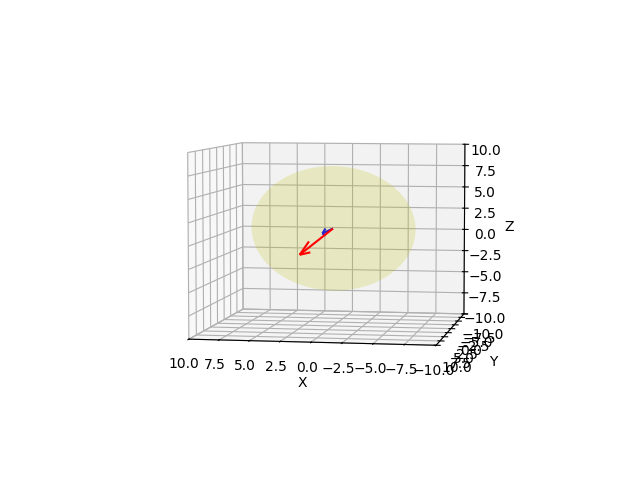
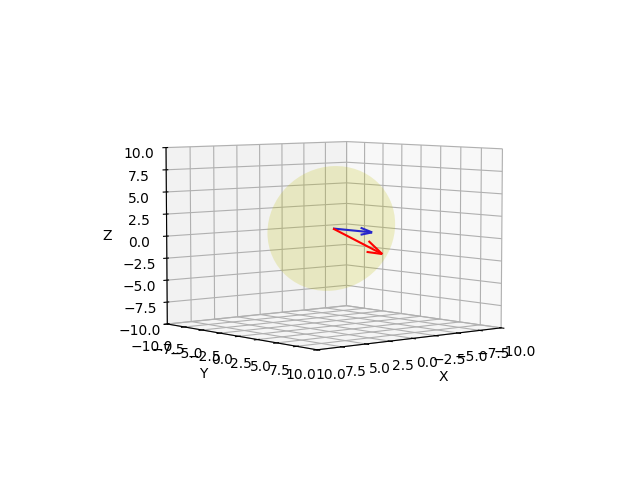
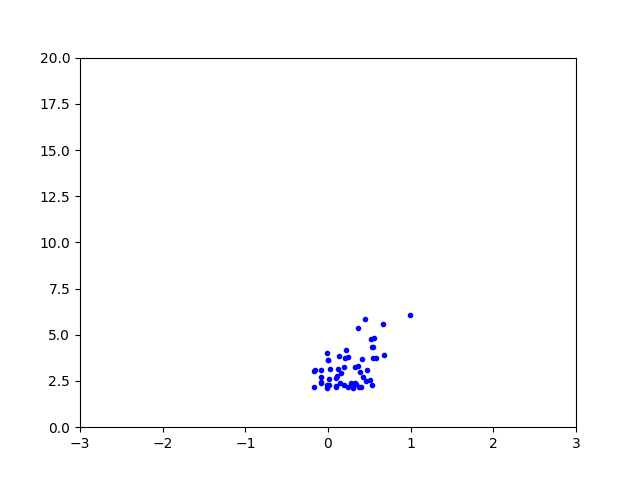

Geri-Yansıtmayla 3D Işın Hesabı (Back-projecting a 3D Ray), ve Düzlem Mesafesi
Üç boyutlu bir noktanın iki boyuta yansımasında derinlik bilgisinin kaybolduğunu gördük, birden fazla üç boyutlu nokta aynı piksele tekabül edebiliyor. Bu durumda sadece piksel kullanarak obje mesafe ölçümünü tek bir görüntü üzerinden nasıl yapabiliriz?
Eğer derinlik bilgisini kaybettiysek o zaman resimde bilinen diğer bazı faktörleri yanyana koyarak bir uzaklık hesaplayabiliriz belki. Mesela alttaki resimdeki kırmızı piksellerin mesafesini bulmak istiyorum.
from PIL import Image
import util
im = np.array(Image.open('mitte.png'))
plt.xlim(0,320)
plt.ylim(240,0)
plt.imshow(im)
h = np.array(im).shape[0]
np.random.seed(1)
quad = np.array([[140,0],[164,90.],[212,90],[234,0]])
util.plot_quad(quad, h, 'y')
N = 1000
random_points = np.random.uniform(0, 320, (N, 2)).astype(np.int)
random_points = random_points[random_points[:,1] < 240]
mask = np.array([util.inside_quad(quad, p)[0] for p in random_points])
plt.plot(random_points[mask][:,0], h-random_points[mask][:,1], 'r.')
p1 = np.array([215, 180, 1.])
plt.plot(p1[0], p1[1], 'c.')
plt.savefig('vision_80ray_02.png')

Problem öyle ki bu piksellerin yolu temsil eden pikseller olduğunu biliyorum. Bu bilgiyi nasıl elde ettim? Renksel bazlı, ya da iki boyutta imajı parçalara bölmeyi çok iyi yapan bir algoritmam var belki, vs. ve bu sayede o piksellerin caddeye ait oldugunu biliyorum. O zaman, bu bilgi elde varsa, bu bana bir şey kazandırdı: üç boyutta bu piksellerin {\em hangi düzlemden} geldiğini biliyorum artık. Bu düzlem $xy$ düzlemidir, orada $z=0$.
Bir numara daha: bir piksele bakarak onun kesin üç boyutlu yerini hesaplayamayabilirim. Ama bir piksele tekabül eden, onu oluşturan kamera merkezinden dünyaya doğru fırlayan bir ışının (ray) kesin formülünü hesaplayabilirim.

Mesela örnek kırmızı piksellerden biri $p_1$ noktası olabilir, kamera merkezi $C$'den bir ışın fırlatıyoruz, bu ışın $p_1$'i oluşturuyor ve dış dünyadaki bir $X$ noktasına doğru gidiyor. Şimdi bu iki fikri biraraya koyarsak, elde bir düzlem, bir çizgi var; üç boyutlu yer nasıl bulunur? İkisinin kesiştiği yer ile! Bu nokta yol noktasının üç boyutlu kordinatıdır.
Kamera Merkezi
Bu yazıda kamera merkezinin bilindiğini varsaydık. Ama eğer bilmeseydi, ve elde sadece $P$ matrisi olsa, kamera merkezini nasıl hesaplarız onu görelim. Biraz önceki resmi işlerken kameranın yerden 1 metre yükseltilmiş olduğunu farzedeceğiz (bunu biliyoruz), fakat bazen bu bilgi verilmemiş olabilir. Bu durumda dışsal matristen başlayabiliriz.
Dışsal (exintrinsic) matrisler dış dünya kordinatlarının kamera kordindatlarına nasıl transform edildiğini tarif ederler. Bunun yerine kamera duruşunu modelleyip oradan geriye gidersek aynı noktaya gelmiş oluruz [1].
$$ \left[ \begin{array}{c|c} R & \boldsymbol{t} \\ \hline \boldsymbol{0} & 1 \\ \end{array} \right] = \left[ \begin{array}{c|c} R_c & C \\ \hline \boldsymbol{0} & 1 \\ \end{array} \right]^{-1} $$
$$ = \left[ \left[ \begin{array}{c|c} I & C \\ \hline \boldsymbol{0} & 1 \\ \end{array} \right] \left[ \begin{array}{c|c} R_c & 0 \\ \hline \boldsymbol{0} & 1 \\ \end{array} \right] \right]^{-1} $$
$$ = \left[ \begin{array}{c|c} R_c & 0 \\ \hline \boldsymbol{0} & 1 \\ \end{array} \right]^{-1} \left[ \begin{array}{c|c} I & C \\ \hline \boldsymbol{0} & 1 \\ \end{array} \right]^{-1} $$
$$ = \left[\begin{array}{c|c} R_c^T & 0 \\ \hline \boldsymbol{0} & 1 \\ \end{array} \right] \left[ \begin{array}{c|c} I & -C \\ \hline \boldsymbol{0} & 1 \\ \end{array} \right] $$
$$ = \left[\begin{array}{c|c} R_c^T & -R_c^TC \\ \hline \boldsymbol{0} & 1 \\ \end{array} \right] $$
Birbirine tekabül eden hücrelere bakınca
$$ t = -R_c^TC$$
O zaman
$$ C = -R_c^T t$$
Burada $R_c$ $P$ yansıtma matrisinin ilk üç kolonundan oluşan matristir. Ayrıca kamera merkezinin içsel matris $K$'ye bağlı olmadığına dikkat.
Sözde Ters ile $X$
Şimdi $X$ bulmak lazım. Bir fikir akla geliyor, $PX = x$ olduğuna göre, $P$'nin tersini alıp bu tersi soldan iki tarafla çarpsak olmaz mı (solda $P$ yokolur, $X$ kalır)? Burada bir problem var, $P$ matrisi $3 \times 4$ matrisi, kare matris olmadığı için tersi alınamıyor. Bu hesap için 2. derste işlenen sözde ters (pseudoinverse) işlemini kullanacağız. Hatırlatarsak, $P$'nin sözde tersi $P^{+}$
$$ P^{+} = P^T(PP^T)^{-1}$$
işlemidir, ki $PP^{+} = I$. Ama $PP^T$ çarpımı sayısal iyi sonuçlar vermeyebilir (çarpımlar çok büyür), endişeye gerek yok, sayısal kütüphaneler sözde ters işlemini SVD üzerinden çözüyor (çok hızlı), bkz. 2. ders.
O zaman $P^{+}x$ ile bahsettiğimiz ışındaki bir noktayı buluruz. Dikkat, sadece birini buluruz, diğer noktalar da mümkündür. Ama o noktalar bizi ilgilendirmiyor (şimdilik) elimizde iki nokta olacak, biri kamera merkezi diğeri bu hesaplanacak olan, bu ikisi yeterli. Ondan önce üstteki hesabın gerçekten bir $X$ verip vermediğini kontrol edelim, hesaplanan noktayı tekrar geri kameraya yansıtırsak ne olur?
$$ P (P^{+}x) = Ix = x$$
Hesap doğruymuş demek ki. Işın hesabı yapalım. Bir önceki resimde $p_1$'e benzeyen bir nokta iki üstteki resimde mavi renkli gösterildi. Bu piksele doğru giden bir çizgi neye benzer?
from mpl_toolkits.mplot3d import Axes3D
import scipy.linalg as lin
import sys; sys.path.append('../vision_02')
import plot3d
K = [[ 282.363047, 0., 166.21515189],
[ 0., 280.10715905, 108.05494375],
[ 0., 0., 1. ]]
K = np.array(K)
R = np.eye(3)
t = np.array([[0],[1.],[0]])
P = K.dot(np.hstack((R,t)))
C = np.array([0., 0., 1.])
X = np.dot(lin.pinv(P),p1)
X = X / X[3]
XX = np.copy(X)
XX[1] = X[2]; XX[2] = X[1]; XX[2] = -XX[2]
w = 10
f = plt.figure()
ax = f.gca(projection='3d')
xvec = C - XX[:3]
xvec = -xvec
ax.quiver(C[0], C[1], C[2], xvec[0], xvec[1], xvec[2],color='red')
ax.set_xlim(0,10);ax.set_ylim(0,10);ax.set_zlim(0,10)
ax.quiver(0., 0., 1., 0, 5., 0.,color='blue')
plot3d.plot_plane(ax, [0., 0., 1.], [0, 5., 0.], color='y', size=7)
ax.set_xlabel("X")
ax.set_ylabel("Y")
ax.set_zlabel("Z")
ax.set_xlim(-w,w);ax.set_ylim(-w,w);ax.set_zlim(-w,w)
ax.view_init(elev=5, azim=100)
plt.savefig('vision_80ray_04.png')
ax.view_init(elev=5, azim=50)
plt.savefig('vision_80ray_05.png')
 
Mavi renkli ok kameranın imaj düzlemine dik (normal) olan vektör. Kırmızı olan ok $p_1$'e işaret eden üç boyutlu çizgi.
Şimdi tüm noktaları yapalım. Altta ilk gösterilen kod iki noktayı baz alan sonsuza giden çizgi ile bir düzlem (bir nokta, bir normal ile tanımlı) arasında kesişmeyi hesaplayan çağrıdır, bkz [3]. Üstteki gördüğümüz kırmızı renkli pikselleri alıp teker teker onların ışınını bulacağız, sonra bu çizginin $xy$ düzlemi ile kesişmesini bulacağız. $xy$ düzlemini tanımlamak için bir nokta, bir de normal vektör lazım; en basit nokta orijin, yani $(0,0,0)$, normal ise dik yukarı giden birim vektör $\left[\begin{array}{ccc} 0&0&1 \end{array}\right]^T$. Kamera matrisi $K$'yi biliyoruz, çünkü kamerayı biz kalibre ettik, detaylar için [2].
def intersect(n,V0,P0,P1):
"""
n: duzleme normal vektor
V0: duzlemdeki herhangi bir nokta
P0: P0P1 cizgisinin bir ucu
P1: P0P1 cizgisinin diger ucu
"""
w = P0 - V0;
u = P1-P0;
N = -np.dot(n,w);
D = np.dot(n,u)
sI = N / D
I = P0+ sI*u
return I
import scipy.linalg as lin
xx = np.ones((len(random_points[mask]), 3))
xx[:,0] = random_points[mask][:,0]
xx[:,1] = h-random_points[mask][:,1]
xyp = np.array([0,0,0])
xyn = np.array([0,0,1.])
for x in xx:
X = np.dot(lin.pinv(P),np.array(x))
X = X / X[3]
XX = np.copy(X)
# Y-Z degistir, Y'nin isaretini degistir
XX[1] = X[2]; XX[2] = X[1]; XX[2] = -XX[2]
Xi = intersect(xyn, xyp, XX[:3], C)
plt.plot(Xi[0], Xi[1],'b.')
plt.xlim(-3,3)
plt.ylim(0,20)
plt.savefig('vision_80ray_03.png')

Üstteki görüntü kırmızı piksellerin 3 boyutta, caddedeki kuşbakışı görüntüsü. Noktalar mantıklı, bir sağa kayış var, bu doğru çünkü her ne kadar iki boyutlu görüntüde noktalar yukarı gidiyor gibi dursa da, aslında kesişme noktasına giden çizginin sağına doğru akmışlar. Bir diğer durum en altta birkaç metrelik bir kısmın boş olması. Bu da mantıklı çünkü kamera direk altını göremiyor, en yakın görebildiği noktalar biraz daha önde olanlar.
Peki kameranın duruşunu biliyorum, yere paralel, 1 metre yukarıda, direk düz ileri bakıyor. Bu bilgiyi kullanarak bir üçgen oluşturup, açılarla ve benzeri şekillerle daha basit şekilde mesafeyi hesaplayabilirdim, niye bunu yapmadım? Özellikle $P$ matrisini kullanmamızın sebebi eğer yer değiştirmeyle beraber kamerada dönüş (rotation) durumu da varsa (bu örnekte yoktu) bu bilginin de $P$ içinde olacağıdır. Bu durumda üstteki sözde ters ile yine direk bir ışını basit bir şekilde elde edebilirdik. Öteki türlü çetrefil bir sürü ek hesaplara girmek gerekecekti. Yani tarif ettiğimiz yaklaşımla her türlü kamera duruşunu idare edebiliriz.
Hesapların metrik olarak bir anlamının olduğuna dikkat. Çünkü yerden 1 metre yüksekte olmayı hesabın içine direk dahil ettik, bu sebeple mesela uzaklık sonuçları, 2.5 metre, 5 metre gibi anlamlı çıktı.
Kaynaklar
[1] Kyle Simek, Dissecting the Camera Matrix, Part 2: The Extrinsic Matrix, http://ksimek.github.io/2012/08/22/extrinsic/
[2] Bayramlı, Algılayıcı Ölçümleri, Video, Android, https://burakbayramli.github.io/dersblog/sk/2017/02/algilayici-olcumleri-video-android.html
[3] Bayramlı, Çok Boyutlu Calculus, Ders 5